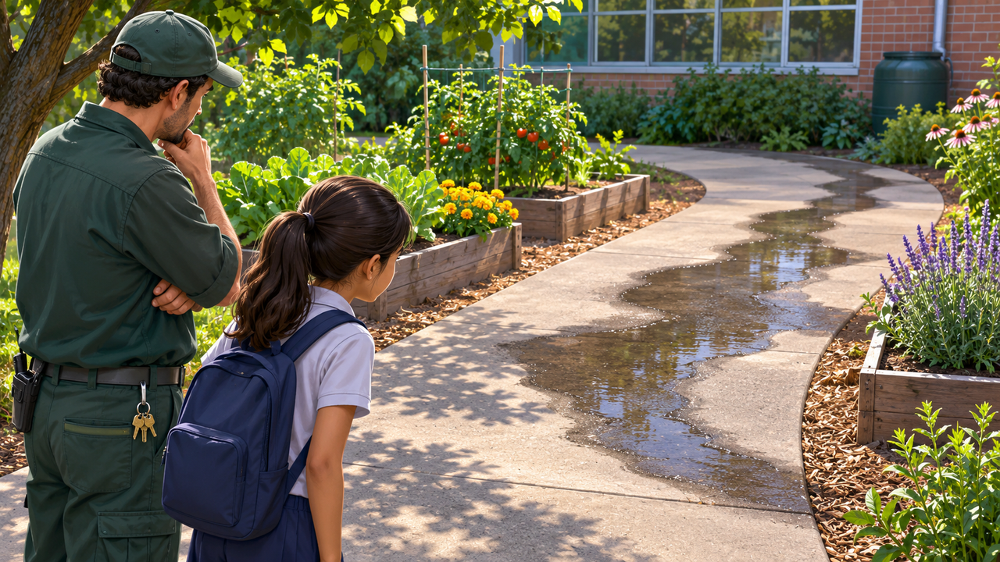

اكتشاف الأعطال
نكتشف تسرّبًا
الريّ متوقّف. فمن بلّل الممرّ؟

حديقة المدرسة
«لكنّ الريّ متوقّف أصلًا!» توقّف سهر البالغ عشر سنوات عند مدخل حديقة المدرسة. على الممرّ كانت بقعة داكنة من الرطوبة، تمامًا حيث يمرّ الجميع في الاستراحة. نظر آفي، مسؤول المبنى، إلى جدول أوقات الريّ: كان يفترض أن يعمل النظام في ساعات أخرى.
أراد سهر، عضو لجنة الحديقة، أن يعلن أنّه وجد أنبوبًا مكسورًا. طلب منه آفي أن ينظر مرّة أخرى. بقعة الماء علامة مهمّة، لكنّها ليست جوابًا. هل غسل أحد الممرّ؟ هل هطل مطر؟ أم أنّ شيئًا يحدث تحت الأرض؟
العلامة تعود
يوم الثلاثاء كانت البقعة بانتظارهم مرّة أخرى. هذه المرّة امتدّت حتّى طرف الحوض. نظر سهر إلى صورة من الأمس وكان متأكّدًا أنّ الرطوبة تتقدّم. ثم اكتشف أنّه صوّر الصورتين في ساعات مختلفة، حين صنعت الشمس ظلًّا آخر على الممرّ. هل كان كلّ الفرق الذي رآه ماءً حقًّا؟
يوافق آفي على أنّ التوثيق قد يساعد، لكنّه يطلب من الأطفال ألّا يفتحوا حنفيّات أو يحفروا قرب الأنابيب. أيّ فحص لنظام المياه نفسه يقوم به أفراد الصيانة فقط.
يشير سهر إلى وسط البقعة: «هنا العطل!» يطلب منه آفي البقاء على الجزء الجافّ من الممرّ ويريه الميل الخفيف للأرض. يمكن للماء أن يتحرّك داخل التربة ويظهر في مكان غير مصدر التدفّق. «إذن المكان الأكثر رطوبة لا يكشف بالضرورة أين بدأ كلّ شيء؟» يسأل سهر.
الآن تبدو الصورة أيضًا مختلفة في عينيه: ليست مجرّد صورة لبقعة، بل رصد ينقصه معلومات عن الساعة والطقس وما حدث في الحديقة قبل ذلك.
عدّة تفسيرات ممكنة
بجانب الحوض يمرّ أنبوب ريّ، وبالقرب توجد حنفيّة أيضًا. قد تكون هناك مياه غسيل، أو ريّ غير معتاد، أو تسرّب في الأنبوب، أو مياه وصلت من مكان أعلى. هذه تفسيرات ممكنة، وليست نتائج.
يفهم سهر أنّ علامة واحدة لا تروي ما حدث. إن اختير تفسير مبكرًا جدًّا فقد يُفحص المكان الخطأ ويُهدر الوقت.
لماذا يهمّ إيجاد المصدر
إن وُجد تدفّق مياه زائد فهو يهدر موردًا ثمينًا وقد يبلّل الممرّ ويضرّ النباتات. لكن إغلاق نظام كامل بناءً على شكّ فقط قد يترك الأحواض بلا ريّ. ينبغي معرفة المزيد قبل التصرّف.
يحتاج آفي إلى معلومات تساعده على فهم أين تبدأ المشكلة ومتى تحدث، قبل أن يطلب إصلاحًا أو يغيّر التشغيل.
ليس كلّ يوم يبدو نفسه
في أحد الصباحات كانت الأرض جافّة نسبيًّا. في ذلك اليوم لم يعمل ريّ مخطّط ولم يكن هناك تنظيف في المنطقة. وفي يوم آخر كانت البقعة أكبر، لكنّ مطرًا خفيفًا هطل ليلًا.
يرى سهر أنّ المقارنة بين الأيّام تتطلّب الانتباه إلى الظروف المحيطة. إن لم يُوثَّق المطر وساعات الريّ فقد يُساء تفسير الرطوبة.
يوم الخميس مرّت عاملة التنظيف قرب الحديقة. تذكّر سهر أنّه رآها أيضًا في اليوم الذي كانت فيه البقعة كبيرة جدًّا. كاد يكتب: «التنظيف سبّب الرطوبة»، ثم محا وصحّح: «غير معروف إن غُسل هنا؛ ينبغي التحقّق». كانت ملاحظة صغيرة قد تمنع استنتاجًا خاطئًا.
يبتسم آفي: «هذا سؤال يمكن فحصه الآن». يكتشف سهر أنّ الخطوة المهمّة في التحقيق أحيانًا هي الاعتراف بأنّ السبب غير معروف، حتّى حين يوجد تفسير يبدو مقنعًا.
المعلومات الناقصة
هناك صور للبقعة، وساعات ريّ مخطّطة، ووصف لأنابيب قريبة. وما زال ينقص معلومات مستمرّة عن تدفّق المياه وحالة الأنابيب والمصدر الدقيق للرطوبة.
يسأل سهر كيف يمكن التمييز بين تلميح إلى عطل وبين دليل على عطل. أيّ بيانات كانت تساعد آفي على تضييق عدد الاحتمالات من دون فعل غير آمن؟
قبل أن نبتكر
يفهم سهر أنّ مهمّة الفريق ليست «بناء شيء يصلح أنبوبًا» بل مساعدة شخص مسؤول على الحصول على صورة دقيقة لحالة غير ظاهرة للعين.
أيّ معلومات يُفضَّل جمعها على امتداد الزمن؟ وما الذي ينبغي معرفته عن النظام قبل مقارنة أيّام مختلفة؟ وكيف يمكن عرض النتائج لآفي بحيث يفهم ما هو معروف وما زال فرضيّة؟
تلميح من عالم الفضاء
ترسل المركبات الفضائيّة بيانات كثيرة عن حالة أنظمتها، مثل درجة الحرارة والجهد والضغط. يمكن لفحص سلسلة بيانات أن يساعد على رصد تغيّر غير معتاد والبحث عن مصدره، لكن القياس نفسه لا يوفّر دائمًا جوابًا.
بعد القراءة — في ورقة الفريق
تحدّثوا في الفريق وأجيبوا استنادًا إلى معلومات القصّة. إذا نقصت معلومة، اكتبوا سؤالًا للمتابعة.
- من تريدون مساعدته في القصّة؟
- ماذا يحاول أن يفعل وما الذي يصعّب عليه ذلك؟
- ما الذي يحتاج إلى أن يكون قادرًا على فعله؟
- ما الذي تريدون معرفته أيضًا قبل تطوير الأفكار؟